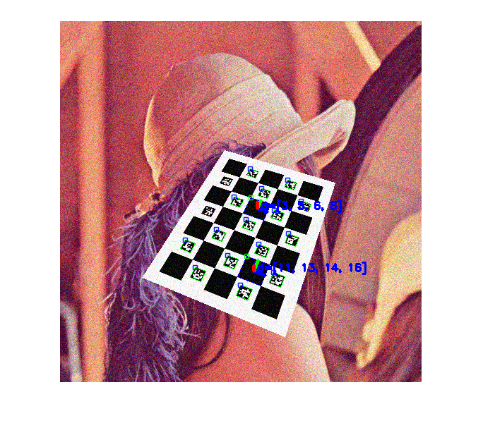

Detection of Diamond Markers Demo
Detection and pose estimation using ChArUco markers.
Sources:
Contents
Parameters
% options vidFile = ''; % Use video file instead of camera as input squareLength = 120; % Square side length (in pixels) markerLength = 60; % Marker side length (in pixels) dictionaryId = '6x6_250'; % Dictionary id showRejected = false; % Show rejected candidates too estimatePose = true; % Wheather to estimate pose or not if estimatePose % calibrated camera parameters load camera_parameters.mat -mat camMatrix distCoeffs %camMatrix = eye(3); %distCoeffs = zeros(1,5); else camMatrix = []; distCoeffs = []; end autoScale = false; autoScaleFactor = 1.0; % Automatic scale. The provided number is multiplied % by the last diamond id becoming an indicator of % the square length. In this case, the squareLength % and markerLength values are only used to know the % relative length relation between squares and % markers % marker detector parameters detectorParams = struct(); if false %detectorParams.nMarkers = 1024; detectorParams.adaptiveThreshWinSizeMin = 3; detectorParams.adaptiveThreshWinSizeMax = 23; detectorParams.adaptiveThreshWinSizeStep = 10; detectorParams.adaptiveThreshConstant = 7; detectorParams.minMarkerPerimeterRate = 0.03; detectorParams.maxMarkerPerimeterRate = 4.0; detectorParams.polygonalApproxAccuracyRate = 0.05; detectorParams.minCornerDistanceRate = 0.05; detectorParams.minDistanceToBorder = 3; detectorParams.minMarkerDistanceRate = 0.05; detectorParams.cornerRefinementMethod = 'None'; detectorParams.cornerRefinementWinSize = 5; detectorParams.cornerRefinementMaxIterations = 30; detectorParams.cornerRefinementMinAccuracy = 0.1; detectorParams.markerBorderBits = 1; detectorParams.perspectiveRemovePixelPerCell = 8; detectorParams.perspectiveRemoveIgnoredMarginPerCell = 0.13; detectorParams.maxErroneousBitsInBorderRate = 0.04; detectorParams.minOtsuStdDev = 5.0; detectorParams.errorCorrectionRate = 0.6; end % dictionary dictionary = {'Predefined', dictionaryId};
Input source
if ~isempty(vidFile) && exist(vidFile, 'file') == 2 vid = cv.VideoCapture(vidFile); waitTime = 1; % 1 sec else vid = createVideoCapture([], 'charuco'); waitTime = 0.01; % 10 msec end if ~vid.isOpened(), error('failed to initialize VideoCapture'); end
Main loop
totalTime = 0; totalIterations = 0; hImg = []; while true % grab frame img = vid.read(); if isempty(img), break; end tId = tic(); % detect markers [markerCorners, markerIds, rejectedMarkers] = cv.detectMarkers(... img, dictionary, 'DetectorParameters',detectorParams); % detect diamonds if ~isempty(markerIds) [diamondCorners, diamondIds] = cv.detectCharucoDiamond(... img, markerCorners, markerIds, squareLength / markerLength, ... 'CameraMatrix',camMatrix, 'DistCoeffs',distCoeffs); end % estimate diamond pose if estimatePose && ~isempty(diamondIds) if ~autoScale [rvecs, tvecs] = cv.estimatePoseSingleMarkers(... diamondCorners, squareLength, camMatrix, distCoeffs); else % if autoscale, extract square size from last diamond id rvecs = cell(size(diamondCorners)); tvecs = cell(size(diamondCorners)); for i=1:numel(diamondCorners) autoSquareLength = autoScaleFactor * double(diamondIds{i}(4)); currentCorners = {diamondCorners{i}}; [currentRvec, currentTvec] = cv.estimatePoseSingleMarkers(... currentCorners, autoSquareLength, camMatrix, distCoeffs); rvecs{i} = currentRvec{1}; tvecs{i} = currentTvec{1}; end end end % tic/toc currentTime = toc(tId); totalTime = totalTime + currentTime; totalIterations = totalIterations + 1; if mod(totalIterations, 30) == 0 fprintf('Detection time = %f ms (Mean = %f ms)\n', ... 1000*currentTime, 1000*totalTime/totalIterations); end % draw results if ~isempty(markerIds) img = cv.drawDetectedMarkers(img, markerCorners); % 'IDs',markerIds end if showRejected && ~isempty(rejectedMarkers) img = cv.drawDetectedMarkers(img, rejectedMarkers, ... 'BorderColor',[255 0 100]); end if ~isempty(markerIds) && ~isempty(diamondIds) img = cv.drawDetectedDiamonds(img, diamondCorners, 'IDs',diamondIds); if estimatePose for i=1:numel(diamondIds) img = cv.drawAxis(img, camMatrix, distCoeffs, ... rvecs{i}, tvecs{i}, squareLength * 0.5); end end end if isempty(hImg) hImg = imshow(img); elseif ishghandle(hImg) set(hImg, 'CData',img); else break; end drawnow; pause(waitTime); end vid.release();
Detection time = 92.399476 ms (Mean = 95.749196 ms) Detection time = 91.688747 ms (Mean = 93.386428 ms)